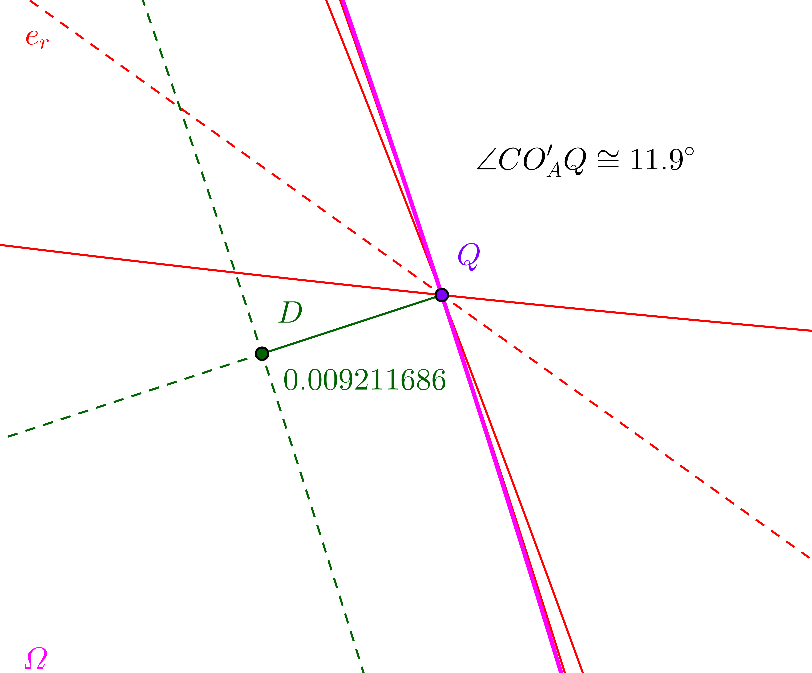

Lugar geométrico engañoso
P es un punto en la circunferencia circunscrita al triángulo equilátero △ABC. A', B' y C' son los pies de las perpendiculares trazadas desde P a los lados a, b y c, que están en la recta de Simson del punto P, y sea O el circuncentro del △ABC. Entonces las circunferencias cA = OAA', cB = OBB' y cC = OCC' son coaxiales. Es decir, comparten un mismo eje radical er, por lo que sus centros OA, OB y OC están alineados, y al ser secantes, se cortan en el mismo par de puntos. Sea Q el otro punto de corte, distinto de O, en que se cortan.
Pero en realidad no es así. El lugar geométrico es una curva algebraica de grado 10 que pasa por A, B, C, A'', B'' y C'', y que se aparta del conjunto de los tres arcos una distancia máxima de 0.0092R, donde R es el radio de la circunferencia circunscrita al △ABC y de los tres arcos. Este distancia máxima se produce cuando el punto Q se halla aproximadamente a unos 11.9° de A, B o C, ángulo medido respecto del centro del arco respectivo. Nunca hay que fiarse de las apariencias...  Parando la animación, puede desplazarse el punto P con el deslizador θ, que indica el ángulo polar de P respecto de O, o directamente con el ratón. Cuando 210° < θ < 330°, puede marcarse la casilla [Dist] para ver la distancia del punto Q, en el lugar geométrico, al arco BA''C, así como la distancia angular del punto Q al C, medida desde el centro de ese arco. Se puede hacer zoom y desplazar la vista gráfica. La ecuación del lugar en coordenadas baricéntricas «tan solo» tiene 57 términos: x⁸y² + 2x⁷y³ - 129x⁶y⁴ + 508x⁵y⁵ - 129x⁴y⁶ + 2x³y⁷ + x²y⁸ - 2x⁸yz + 126x⁷y²z - 638x⁶y³z - 126x⁵y⁴z - 126x⁴y⁵z - 638x³y⁶z + 126x²y⁷z - 2xy⁸z + x⁸z² + 126x⁷yz² + 254x⁶y^2z² + 770x⁵y³z² + 2x⁴y⁴z² + 770x³y⁵z² + 254x²y⁶z² + 126xy⁷z² + y⁸z² + 2x⁷z³ - 638x⁶yz³ + 770x⁵y²z³ - 774x⁴y³z³ - 774x³y⁴z³ + 770x²y⁵z³ - 638xy⁶z³ + 2y⁷z³ - 129x⁶z⁴ - 126x⁵yz⁴ + 2x⁴y²z⁴ - 774x³y³z⁴ + 2x^2y⁴z⁴ - 126xy⁵z⁴ - 129y⁶z⁴ + 508x⁵z⁵ - 126x⁴yz⁵ + 770x³y²z⁵ + 770x²y³z⁵ - 126xy⁴z⁵ + 508y⁵z⁵ - 129x⁴z⁶ - 638x³yz⁶ + 254x²y²z⁶ - 638xy³z⁶ - 129y⁴z⁶ + 2x³z⁷ + 126x²yz⁷ + 126xy²z⁷ + 2y³z⁷ + x²z⁸ - 2xyz⁸ + y²z⁸ = 0 Propuesto por Antreas Hatzipolakis, Oct 23 3026. Resuelto por Francisco Javier García Capitán. Ignacio Larrosa Cañestro (Grupo XeoDin), 26 octubre 2026. Creado con GeoGebra Página principal |